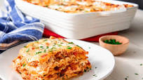

Lasagna Recipe

Description
This recipe is a beloved family favorite since 1960.
I hope that you can take this recipe and make a delicious meal for you
and your family to enjoy for generations.
Ingredients
- 16 oz package lasagna noodles
- 1lb lean ground beef
- Salt and pepper
- 1 clove garlic, minced
- 1/2 lb shredded mozzarella cheese
- 1 pint ricotta cheese
Steps
- Bring a pot lightly salted water to a boil
- Preheat oven to 350 degrees F.
- Brown beef and season with salt and pepper;drain
- Stir in spaghetti sauce and garlic and simmer 5 mins
- Combine mozzarella and ricotta; stir well
- Alternate layers of noodles, meat and cheese in a 9x13 inch pan
- Bake in preheated oven for 30 minutes, until cheese is melted